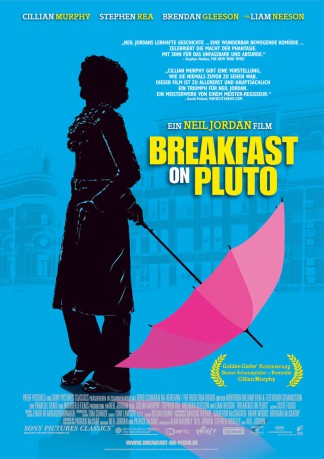

#9466 Breakfast on Pluto
 
 IMDB-Wertung: 7.3 / 10
IMDB-Wertung: 7.3 / 10  Tomatometer: 56
Tomatometer: 56  Metascore: 0
Metascore: 0 
Der 10-jährige Patrick der als Baby von seiner Mutter ausgesetzt wurde, entwickelt Gefallen an Frauenkleidung. In dem kleinen irischen Dorf Tyreelin kommt sein fortgesetzter Hang zur Weiblichkeit aber ebenso wenig an wie ein Schulaufsatz, in dem der nun älter gewordene Patrick über die Beziehung zwischen dem Pfarrer und dessen ehemaliger Haushälterin berichtet, die vermutlich Patricks Mutter ist. Nach vergeblichen Versuchen Patricks, mehr über die Identität seiner Mutter zu erfahren, und erzieherischen Maßnahmen seitens seiner Umwelt, entwickelt Patrick die weibliche Identität Kitten. Das führt zu noch mehr Ablehnung durch die Dorfgesellschaft, die auch seine Freunde Irwin, Laurence und das Mädchen Charlie zu spüren bekommen. Patrick verlässt schließlich die Enge des Dorfes, um zur Ruhe zu kommen.
Jahr: 2005
Dauer: 128 Minuten
FSK: 12
Land: Irland Studio: Sony Pictures ReleasingTonspuren: DD5.1 - , - , - ,
Untertitel: Deutsch, Englisch,
Auflösung: 1080p (1920x1040) Größe: 9472 MB
Genre: Drama, Komödie
Regisseur: Neil Jordan
Drehbuch: Neil Jordan, Pat McCabe, Pat McCabe
Soundtrack: Anna Jordan
Darsteller:
 Cillian Murphy als Patrick 'Kitten' Braden
Cillian Murphy als Patrick 'Kitten' Braden- Eva Birthistle als Eily Bergin
 Liam Neeson als Father Liam
Liam Neeson als Father Liam Ruth McCabe als Ma Braden
Ruth McCabe als Ma Braden- Charlene McKenna als Caroline Braden
- Owen Roe als Dean
 Ruth Negga als Charlie
Ruth Negga als Charlie- Rynagh O'Grady als Mrs. Coyle
 Laurence Kinlan als Irwin
Laurence Kinlan als Irwin Liam Cunningham als 1st Biker
Liam Cunningham als 1st Biker- Peter Halpin als Joseph Hanratty
- Mark Doherty als Running Bear
 Lex Shrapnel als Soldier at Roadblock
Lex Shrapnel als Soldier at Roadblock- Eamonn Owens als Jackie Timlin
 Brendan Gleeson als John Joe Kenny
Brendan Gleeson als John Joe Kenny Antonia Campbell-Hughes als Stripper
Antonia Campbell-Hughes als Stripper- Bryan Ferry als Mr. Silky String
 Stephen Rea als Bertie
Stephen Rea als Bertie Neil Jackson als Man at Disco
Neil Jackson als Man at Disco Dominic Cooper als Squaddie at Disco
Dominic Cooper als Squaddie at Disco Ian Hart als PC Wallis
Ian Hart als PC Wallis Steven Waddington als Inspector Routledge
Steven Waddington als Inspector Routledge James Greene als Gentleman
James Greene als Gentleman- Doreen Keogh als Shopkeeper
- Chris Robinson als Orderly (uncredited)
- Morgan Jones als Building Site Worker
- Mary Coughlan als Housekeeper
- Conor McEvoy als Young Patrick Braden
- Seamus Reilly als Lawrence
- Peter Owens als Butcher
- Emmet Lawlor McHugh als Young Irwin
- Bianca O'Connor als Young Charlie
- Paraic Breathnach als Benny Feely
- Pat McCabe als Peepers Egan / Schoolmaster
- Steve Blount als 1st Bouncer
- Keith McCoy als 2nd Bouncer
- Liam O'Toole als 2nd Biker
- Peter Gowen als Brother Barnabas
- Gavin Friday als Billy Hatchett
- Tony Devlin als White Dove
- Kieran Lally als One of The Mohawks
- Stephen McDaid als One of The Mohawks
- Pete Reddy als One of The Mohawks
- Maurice Seezer als One of The Mohawks
- Ciaran Nolan als Horse Killane
- Mary Ryan als Mrs. Feely
- Kathryn Pogson als Mrs. Henderson
- Alan Moloney als Talking Navvie
- Derek Elroy als Rasta Son
- Mal White als Stephenson
Datei: X:\2005(A-F)\Breakfast on Pluto (2005, FSK12, 1920x1040).mkv seit 03.09.2018
Festplatte: HD 2003-2004-2005(A-F)
 Es gibt insgesamt 49 Filme in der Gruppe '2005(A-F)'
Es gibt insgesamt 49 Filme in der Gruppe '2005(A-F)'